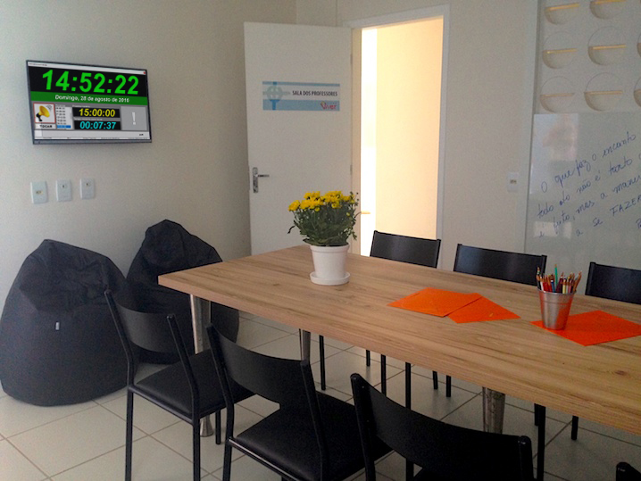
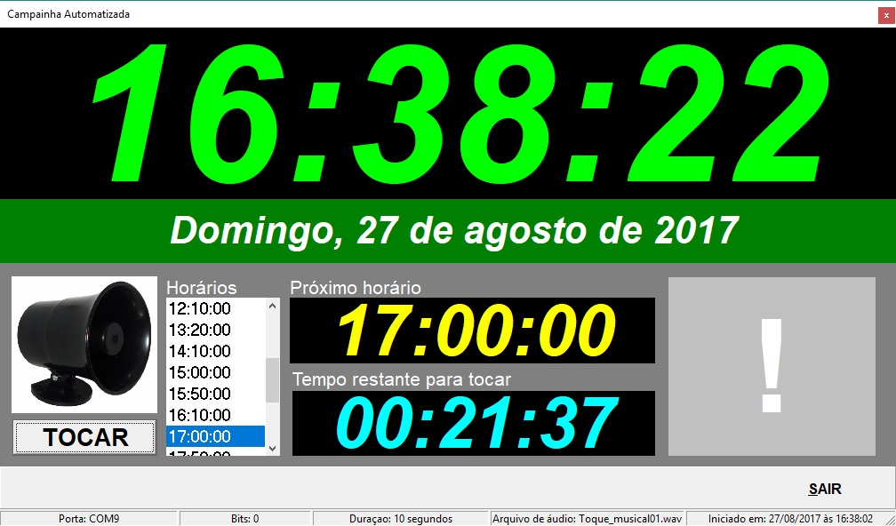
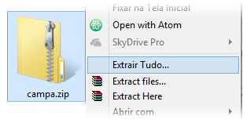
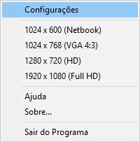
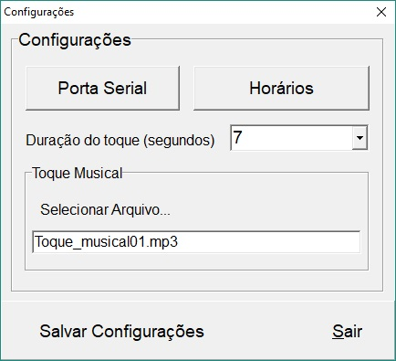
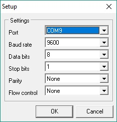
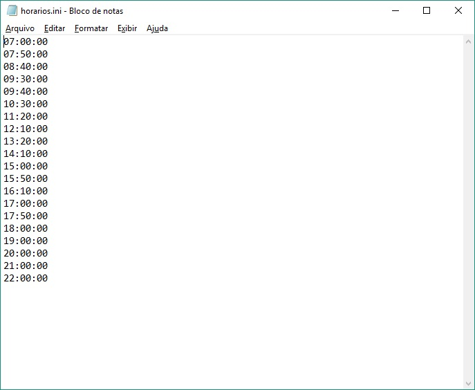

O sistema de campainha automatizada surgiu da necessidade de um sinal sonoro para marcação do início, troca e intevalos de aulas em um ambiente escolar e sem que haja a necessidade de uma pessoa para realizar esse trabalho manualmente, assim os toques sonoros são realizados sempre nos horários corretos com exatidão.
Em sua primeira versão o sistema foi implementado com toque musical em uma lista de horários determinados. Na sua segunda versão, o sistema além de emitir o toque musical, também aciona um dispositivo elétrico que alimenta uma sirene (motor) de acordo com a mesma lista de horários.
O sistema tem um visual de relógios (hora atual, próximo toque e tempo restante) em formato grande em um monitor de computador para ser usado como um relógio de parede.
O sistema é composto de um software para sistema operacioanal Windows (a partir da versão 98) e um dispositivo em hardware ligado a porta USB do computador. Os requisitos para executar o sistema são: Computador básico com Sistema Operacional Windows (Processdor de 200Mhz ou superior, 128MB de RAM e Placa de som). O disposivo USB funciona como um interruptor para o motor da sirene de toque, bastando fazer a instalação elétrica adequada.
Faça o download do arquivo zip contendo os arquivos do programa. Extraia em uma pasta e crie um atalho para execução. Os arquivos usados são apenas o "campa.exe" e "horários.ini" que deve estar no mesmo diretório.
As opções de configuração do software estão em um menu suspenso que é acessado com o botão direito do mouse sobre qualquer parte na tela do sistema. Clique com botão direito e depois em configurações.
Nessa janela de configuração é possível definir as configurações da porta de comunicação serial com o dispositivo e o tempo de acionamento da sirene. Também é possível escolher o arquivo de áudio que será tocado nos horários. Note que não é possível usar um arquivo de som para cada horário. Em todos os horários o arquivo de som executado será o mesmo.
 Os horários de toques estão gravados no arquivo "horarios.ini" e devem ser listados em ordem crescente. Sempre após alguma modificação o mesmo deve ser salvo.
Esperamos que o sistema venha a facilitar o trabalho do dia-a-dia em um ambiente que haja necessidade de toques de horários programados.
Mais informações com o desenvolvedor do sistema, prof. Robson Pires Borges através dos contatos: Telefone celular: +55 (89) 9 9424 1488 / e-mail: robsonborges@ifpi.edu.br
Sistema de Campainha Automatizada - V1:2010 - V3:2017 / Registrado sob o número: BR512016001628-0